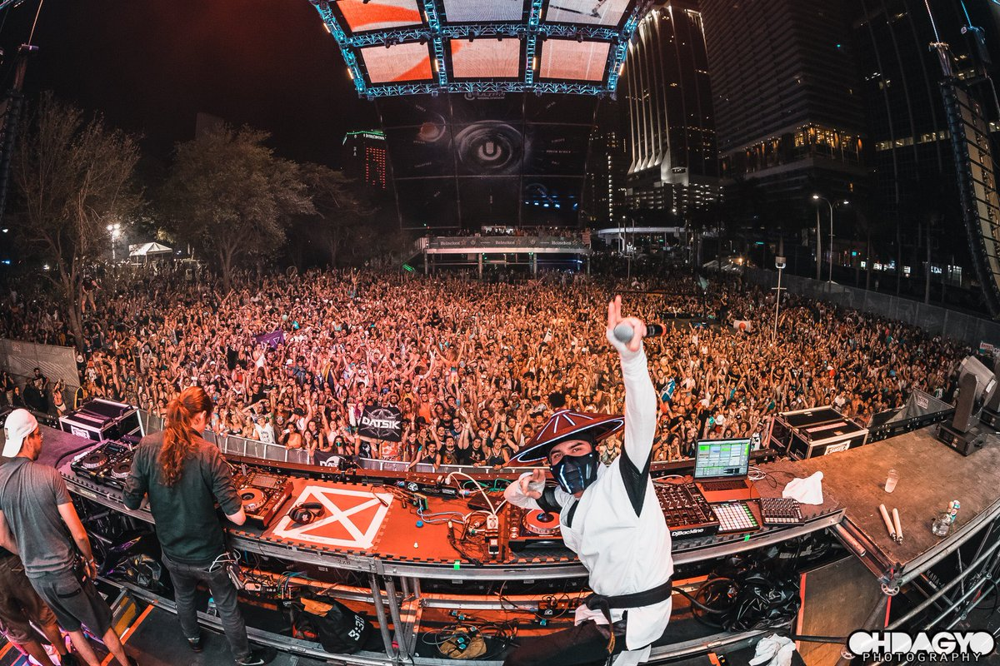

The Origins and the United States Revolution
Dubstep is just one of many sub-genres of EDM (Electronic Dance Music) to be created once the idea of creating music digitially was conceived. Believe it or not, the origin point of these sub-genres usually are not placed in the United States, no matter how popular they may be there now. The story of dubstep begins in the United Kingdom in the late 90's. Some of the very early producers of dubstep are names such as El-B, Zed Bias, and DJ Hatcha. Artists like these 3 were making their own spin off of already established music to create the new sound, one of the genres being reggae music. Reggae music's tempo is ever so perfect for dubstep, so elements such as the drum patterns are very influential. Another genre dubstep variates off of is Drum and Bass, a high-tempo sub-genre of EDM that was making rounds in the UK well before dubstep.
Zed Bias (Image Source: clashmusic.com)
In the early 2000's, the sound of dubstep started to really catch the ears of more and more producers. The argument is valid to say that the artists Skream and Benga are the 2 men who started off the true dubstep revolution. Their interest and passion in the new sounds had them doing whatever they could to get the new genre heard. BBC Radio 1 in Britain picked up the sounds of Skream and Benga and gave it the proper air-time it needed to become popular. Clubs around the UK obviously caught on to the hot new style and started to get the DJ's in that would leave the crowds in awe.
One of the most predominant night clubs in England to start pushing the sounds of dubstep was the club Plastic People. There they had "Forward Night", also referred to as "FWD>>". This night is credited with really helping to start the dubstep revolution in the UK as every club was trying to pull off what Plastic People was doing. At the same time, record labels such as Big Apple Records and Tempa Records were signing on the newcomers to dubstep, another big event in dubstep's history that helped project it to its popularity. Dubstep eventually made it's way over to the US in the mid-2000's when DJ Joe Nice in Baltimore, MD brought the fresh sounds to his club shows. This was all happening while dubstep was thriving in the UK, with big name DJ's such as Mary Anne Hobbs on BBC Radio 1 playing out the best of the best dubstep tunes that were being made in the UK.
Plastic People is a smaller venue with huge influence (Image Source: residentadvisor.com)
The late 2000's will go down in history as the time when dubstep completely exploded. UK musician La Roux, who was a Grammy winner in 2009, gave Skream one of her biggest songs In For The Kill for him to remix (listen to the remix here). This is a good way to show just how much dubstep had spread at that point. When dubstep was first spreading in the late 90's early 2000's, no one thought it would ever get to the point where mainstream artists would want to hear it commercially. The late 2000's also saw the creation of a new way to spread the music, and that was through YouTube. In 2009, the YouTube channel UKF Dubstep was created and showcased the best songs in the genre. The artists at the start were mostly UK based, but that changed rapidly as dubstep was becoming massive in the US. Later, other channels such as The Dub Rebellion and Dubstep Gutter really helped move the sounds throughout the US and beyond.
One of the final pieces of dubstep revolution history belongs to the name Skrillex. While it is not necessarily official, it is widely accepted that he is responsible for the revolution in the US. Not only did Skrillex make songs that the younger generations were loving, they were even new sounds that the UK had never heard before, causing him to be an almost overnight international sensation. Skrillex was originally the lead singer for the pop-punk band named From First To Last before going onto his solo dubstep career in 2007. After doing some solo shows and putting out some EP's under his new alias, Skrillex finally released the EP Scary Monsters and Nice Sprites in late 2010. This EP is credited as the start of the dubstep revolution. Not just for dubstep either; EDM in general was on the come up and once this EP was released, America saw the influx of more and more people listening to EDM. Ask just about anyone who was around in 2010 if they know the name Skrillex and whether they like his music or not, they know the name.
Currently, the scene of dubstep does not have nearly as many followers as it once did. 2010-2014 was the time frame when dubstep was at it's all time highest listener rate. However, Skrillex and the dubstep revolution in general landed in the ears of plenty of passionate fans. These fans went on to start making dubstep themselves, some of which had great success and others who may not have a big following but are still passionate enough about the music to keep on producing. Some big artists who are very active in the scene currently include Excision, Kill The Noise, and Virtual Riot. Dubstep artists who are still active don't usually stick to solely making dubstep anymore, they like to branch out and experiment with other sounds they may enjoy. The fan bases of the artists, however, are very loyal and usually open to experimentation. After all, that is how dubstep came to be!

Dubstep legend Datsik playing Ultra, a huge EDM festival, in 2017 (Image Source: OhDagYo Photography)